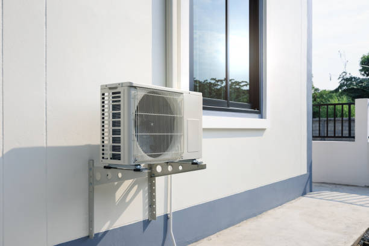
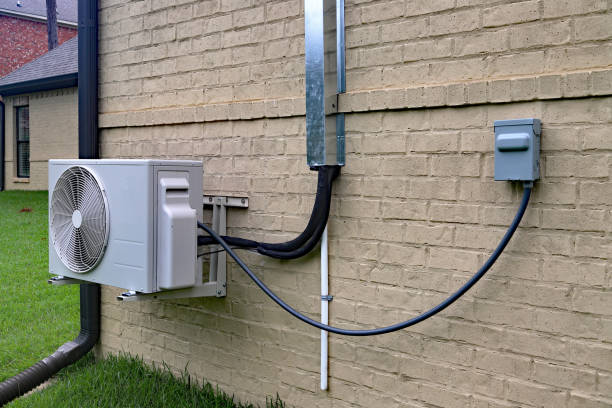
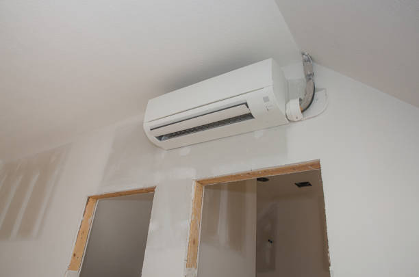

24/7 Ductless Mini Split Repair Services in Huntertown, IN
When your ductless mini split system fails, Elite HVAC Solutions is here to help with fast, reliable repair services throughout Huntertown, Indiana, and the surrounding Fort Wayne area. Our certified technicians provide 24/7 emergency repair services for all major ductless mini split brands, ensuring your comfort is restored quickly and efficiently regardless of the time of day or weather conditions.
With over 15 years of experience in ductless mini split repair and a deep understanding of the unique challenges posed by Indiana's climate, our expert technicians can diagnose and resolve even the most complex system issues. We maintain extensive inventories of genuine replacement parts for all major brands including Mitsubishi Electric, Daikin, Fujitsu, LG, and Carrier, enabling us to complete most repairs on the first visit.
Comprehensive Repair Services
Elite HVAC Solutions provides complete ductless mini split repair services covering every component and system type. Our certified technicians are trained on the latest diagnostic equipment and repair techniques, enabling accurate problem identification and efficient resolution of all types of system malfunctions and performance issues.
Our repair services begin with thorough system diagnosis using advanced electronic testing equipment to identify the root cause of problems. This scientific approach ensures accurate repairs that address underlying issues rather than just symptoms, preventing recurring problems and extending system life.
Common repair services include refrigerant leak detection and repair, compressor replacement, electrical system repairs, sensor calibration, drainage system cleaning, and control board replacement. We also handle more complex issues such as refrigerant line repairs, outdoor unit motor replacement, and complete system retrofits when necessary.
🔧 Expert Repair Services
- 24/7 Emergency Response: Available around the clock for urgent repairs
- Advanced Diagnostics: State-of-the-art equipment for accurate problem identification
- Genuine Parts: OEM replacement parts for lasting repairs
- All Brands Serviced: Expert repair for all major manufacturers
- Warranty Protection: All repairs backed by comprehensive warranties
- Rapid Response: Same-day service available for emergencies
Common Ductless Mini Split Problems
Ductless mini split systems can experience various issues that require professional repair services. Understanding common problems helps Huntertown homeowners identify when to call for expert assistance and avoid further damage from delayed repairs.
Refrigerant Leaks: One of the most common issues affecting ductless mini splits involves refrigerant leaks that reduce system capacity and efficiency. Refrigerant leaks can occur in indoor or outdoor units, refrigerant lines, or connection points. Our technicians use electronic leak detectors to locate even small leaks and perform permanent repairs using proper brazing techniques and quality materials.
Electrical System Problems: Electrical issues can cause complete system failure or intermittent operation problems. Common electrical problems include faulty control boards, defective sensors, damaged wiring, and failed contactors or capacitors. Our certified technicians have extensive experience with electrical troubleshooting and repair, ensuring safe and reliable repairs that meet all electrical codes.
Compressor Issues: The compressor is the heart of the ductless mini split system, and compressor problems can cause complete system failure. Compressor issues may include mechanical failure, electrical problems, or refrigerant-related damage. Our technicians can diagnose compressor problems accurately and recommend appropriate repair or replacement options.
Drainage Problems: Condensate drainage issues can cause water damage and indoor air quality problems. Clogged drainage lines, failed condensate pumps, and improper drainage slope can all cause water accumulation and system damage. Our repair services include complete drainage system cleaning and repair to prevent water damage and ensure proper system operation.
Indoor Unit Problems: Indoor unit issues can include fan motor failure, coil icing, filter restriction, and sensor malfunctions. These problems can cause reduced comfort, increased energy consumption, and potential system damage if not addressed promptly. Our technicians carry common indoor unit replacement parts and can resolve most issues quickly.
Outdoor Unit Issues: Outdoor units are exposed to weather extremes and can experience problems including fan motor failure, coil damage, electrical issues, and refrigerant line problems. Indiana's harsh winters can be particularly challenging for outdoor units, making professional repair services essential for reliable operation.
Emergency Repair Response
HVAC emergencies don't wait for convenient times, which is why Elite HVAC Solutions maintains 24/7 emergency repair services for Huntertown residents. Our emergency response team is equipped with diagnostic tools, common replacement parts, and the expertise needed to resolve urgent repair situations quickly and effectively.
Emergency situations that require immediate attention include complete system failures during extreme weather, refrigerant leaks, electrical hazards, water damage from drainage problems, and safety control failures. Our emergency technicians respond rapidly to minimize discomfort and prevent further damage to your property.
Our emergency service vehicles are fully stocked with diagnostic equipment, common replacement parts, and specialized tools needed for most repair situations. This comprehensive preparation enables our technicians to complete many emergency repairs immediately upon arrival, restoring your comfort without delay.
When immediate repairs aren't possible due to parts availability or complex issues, we can often provide temporary solutions to maintain basic comfort until permanent repairs can be completed. Our emergency services prioritize customer safety and comfort while ensuring quality repairs that provide long-lasting solutions.
⭐ Emergency Repair Success Stories ⭐
"Our mini split died on the hottest day of summer. Elite HVAC had a technician here within an hour and fixed it completely. Lifesavers!" - Maria S., Huntertown
"Professional, fast, and reasonably priced emergency repair. They had our system running perfectly in no time!" - David L., Huntertown
Diagnostic Process and Problem Identification
Accurate diagnosis is the foundation of effective ductless mini split repair. Our certified technicians use systematic diagnostic procedures and advanced testing equipment to identify problems quickly and accurately, ensuring repairs address root causes rather than just symptoms.
The diagnostic process begins with detailed customer interviews to understand system history, recent changes, and specific symptoms. This information helps focus diagnostic efforts and identify potential causes. Our technicians also review maintenance records and previous service history when available.
Visual inspection follows, examining both indoor and outdoor units for obvious signs of damage, wear, or improper operation. We check electrical connections, refrigerant lines, drainage systems, and mounting hardware for problems that might affect system performance or safety.
Electronic testing uses specialized diagnostic equipment to measure system operating parameters including temperatures, pressures, electrical values, and airflow. These measurements are compared to manufacturer specifications to identify performance deviations and potential problems.
System operation testing involves running the unit through various operating modes while monitoring performance and identifying any abnormal operation or sounds. This comprehensive testing reveals intermittent problems and verifies system performance under different operating conditions.
Refrigerant System Repairs
Refrigerant system repairs require specialized knowledge, tools, and EPA certification to ensure safe and effective service. Our certified technicians have extensive experience with refrigerant system diagnosis and repair, handling everything from minor leaks to complete system rehabilitation.
Leak detection uses electronic leak detectors, bubble solutions, and ultraviolet dyes to locate even small refrigerant leaks. Once leaks are identified, our technicians evaluate repair options and perform permanent repairs using appropriate techniques and materials for each specific situation.
Refrigerant recovery and recycling follows EPA regulations to ensure environmental protection while enabling system repairs. We use certified recovery equipment and proper procedures to remove refrigerant safely before performing repairs and recharge systems with the correct refrigerant type and quantity.
System evacuation removes moisture and air from refrigerant circuits after repairs, ensuring proper system operation and preventing damage from contaminants. We use high-quality vacuum pumps and electronic micron gauges to achieve proper evacuation levels before recharging systems.
Electrical System Repairs
Electrical problems can cause various symptoms including complete system failure, intermittent operation, reduced performance, and safety hazards. Our certified technicians have extensive electrical troubleshooting experience and use proper safety procedures to diagnose and repair electrical issues safely.
Control board problems are increasingly common in modern ductless mini split systems with advanced electronic controls. We maintain inventories of replacement control boards for major brands and have the programming knowledge needed to configure replacement boards properly.
Sensor and thermostat issues can cause improper operation, comfort problems, and efficiency losses. Our technicians can test and calibrate sensors or replace them when necessary to restore proper system operation and temperature control.
Wiring problems including damaged conductors, loose connections, and corroded terminals can cause various electrical issues. We use proper electrical repair techniques and materials to ensure safe and reliable electrical connections that meet all applicable codes.
Mechanical Component Repairs
Mechanical components including fans, motors, and compressors require specialized repair techniques and replacement parts. Our technicians maintain extensive inventories of mechanical replacement parts and have the tools and expertise needed for professional mechanical repairs.
Fan motor replacement is a common repair that requires proper motor selection, mounting, and electrical connections. We use OEM replacement motors when available and ensure proper rotation direction, speed, and mounting for reliable operation.
Compressor replacement is a major repair that requires refrigerant recovery, system evacuation, and complete system recharging. Our technicians have the specialized tools and knowledge needed for professional compressor replacement that ensures long-term reliability.
Coil repairs may involve cleaning, straightening, or replacement depending on the extent of damage. We use appropriate cleaning chemicals and techniques to restore coil performance without causing damage to sensitive fins or tubes.
Preventive Measures and System Optimization
In addition to repair services, our technicians identify preventive measures and optimization opportunities that can prevent future problems and improve system performance. This proactive approach helps customers avoid costly repairs and extends equipment life.
Filter maintenance is one of the most important preventive measures for ductless mini split systems. Our technicians provide filter cleaning and replacement services and educate customers on proper filter maintenance schedules and techniques.
Coil cleaning improves system efficiency and prevents various problems including reduced capacity, increased energy consumption, and drainage issues. We use appropriate cleaning chemicals and techniques to restore coil performance safely.
System optimization may include refrigerant charge adjustment, airflow correction, and control calibration to ensure peak performance and efficiency. These adjustments can often improve comfort and reduce operating costs significantly.
Warranty and Quality Assurance
All repair services performed by Elite HVAC Solutions are backed by comprehensive warranties covering both parts and labor. Our commitment to quality ensures customers receive lasting repairs that provide reliable operation and peace of mind.
We use genuine OEM replacement parts whenever possible to ensure compatibility, reliability, and warranty coverage. When OEM parts aren't available, we select high-quality aftermarket parts that meet or exceed original specifications.
Our quality assurance process includes thorough testing after repairs to verify proper operation and performance. We document all repairs and provide customers with detailed service records for warranty and maintenance purposes.
Follow-up service is available to address any questions or concerns after repairs are completed. Our commitment to customer satisfaction extends beyond repair completion with ongoing support and service availability.
Cost-Effective Repair Solutions
Elite HVAC Solutions provides cost-effective repair solutions that balance immediate repair needs with long-term equipment value. Our technicians evaluate repair costs against equipment age and condition to help customers make informed decisions about repairs versus replacement.
For newer systems under warranty, we work with manufacturers to maximize warranty coverage and minimize customer costs. Our warranty expertise ensures customers receive all available coverage for covered repairs.
For older systems, we provide honest assessments of repair costs versus replacement benefits. This transparent approach helps customers make informed decisions based on their specific situations and budget considerations.
We offer financing options for major repairs to help customers manage unexpected repair costs. Our flexible financing programs make necessary repairs accessible while providing convenient payment options.
Seasonal Repair Considerations
Indiana's variable climate creates seasonal challenges for ductless mini split systems, and our repair services address these climate-specific issues effectively. Summer repairs often focus on cooling system problems, while winter repairs typically involve heating system issues and cold-weather operation problems.
Summer repair priorities include refrigerant system issues, electrical problems caused by high demand, and drainage problems from increased condensation. Our technicians are prepared for the increased service demand during hot weather with extended hours and additional technicians.
Winter repairs often involve issues related to outdoor unit operation in cold temperatures, including ice formation, sensor problems, and defrost system issues. Our technicians understand cold-climate operation requirements and carry appropriate parts and tools for winter repairs.
Seasonal preparation services help prevent weather-related problems by addressing potential issues before extreme weather arrives. These proactive services reduce the likelihood of emergency repairs during peak demand periods.
Commercial Repair Services
Beyond residential repairs, Elite HVAC Solutions provides comprehensive ductless mini split repair services for Huntertown businesses and commercial properties. Commercial repairs often require different approaches due to larger systems, multiple zones, and business operation considerations.
Commercial repair services include emergency response designed to minimize business disruption, after-hours service availability, and coordination with business schedules when possible. We understand that HVAC problems can significantly impact business operations and respond accordingly.
Large commercial systems may require specialized parts and longer repair times. Our commercial service team maintains inventories of commercial-grade replacement parts and has access to manufacturer technical support for complex commercial repair situations.
Customer Education and Support
Elite HVAC Solutions believes educated customers achieve better results and avoid many common problems. Our repair services include customer education on proper system operation, maintenance requirements, and early problem identification.
We provide guidance on troubleshooting techniques that can help customers identify when professional service is needed and when simple maintenance might resolve issues. This education empowers customers to maintain their systems properly and recognize potential problems early.
Our ongoing customer support includes seasonal reminders, maintenance scheduling assistance, and technical support for questions that arise between service visits. This comprehensive support helps customers maximize their system investment and minimize repair needs.
Contact Elite HVAC Solutions for Repair Services
Don't let ductless mini split problems compromise your comfort. Elite HVAC Solutions provides fast, reliable repair services throughout Huntertown and the Fort Wayne area with 24/7 emergency availability and expert technicians ready to restore your system quickly.
Our certified repair technicians have the knowledge, tools, and parts needed to resolve any ductless mini split problem efficiently and effectively. We stand behind our repairs with comprehensive warranties and are committed to your complete satisfaction.
Call Elite HVAC Solutions now at 855-772-1650 for fast, professional ductless mini split repair services. We're available 24/7 for emergencies and ready to restore your comfort immediately.
Get Emergency Repair Service
Need Immediate Repair?
Fast, professional ductless mini split repair services in Huntertown, IN.
✓ 24/7 emergency response
✓ Expert diagnosis and repair
✓ Genuine replacement parts
✓ Warranty-backed repairs